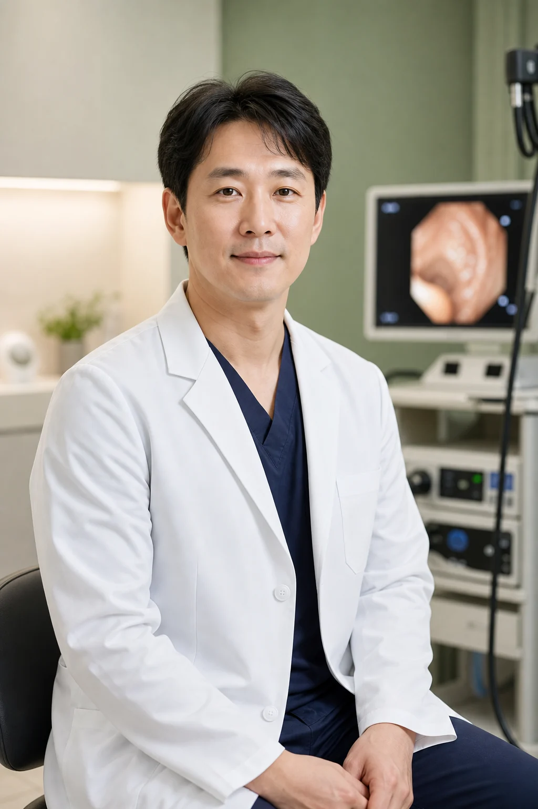

대표원장
이태온 대표원장
건강검진 결과 상담, 소화기 증상 진료, 위·대장내시경 상담을 담당합니다. 검진에서 발견된 이상소견을 외래 진료와 추적관리로 연결합니다.
전문 분야, 상담 범위, 연결 검사까지 한 번에 확인합니다.
건강검진 결과 상담, 소화기 증상 진료, 위·대장내시경 상담을 담당합니다. 검진에서 발견된 이상소견을 외래 진료와 추적관리로 연결합니다.

속쓰림, 혈변, 배변습관 변화, 가족력 등 내시경이 필요한 환자를 평가하고 검사 전 준비부터 검사 후 상담까지 안내합니다.
복부·갑상선·경동맥 초음파와 고혈압, 당뇨, 고지혈증 등 만성질환 추적관리를 담당합니다.
원장별 담당 진료와 검사 상담 범위를 확인할 수 있습니다.
검사를 많이 권하는 것보다 환자의 증상, 가족력, 과거검진 결과, 복용약을 확인한 뒤 필요한 검사를 선별하는 것을 우선합니다. 결과 설명은 “정상/이상”에서 끝내지 않고 다음 추적 주기와 생활관리까지 안내합니다.
어떤 원장에게 예약해야 하는지 환자가 빠르게 판단할 수 있게 정리합니다.
반복되는 상복부 불편감, 검진 이상소견, 헬리코박터 상담이 필요한 경우 우선 연결합니다.
대장내시경 준비, 용종 병력, 가족력, 수면검사 가능 여부를 검사 전 단계에서 확인합니다.
간수치, 혈당, 콜레스테롤, 갑상선, 초음파 이상소견을 장기 관리로 연결합니다.
원장별 진료 가능 요일과 검사 가능 시간을 분리해 안내합니다.
증상과 이전 검사결과를 남겨주시면 검진, 내시경, 초음파, 외래 진료 중 적절한 상담 흐름으로 연결합니다.